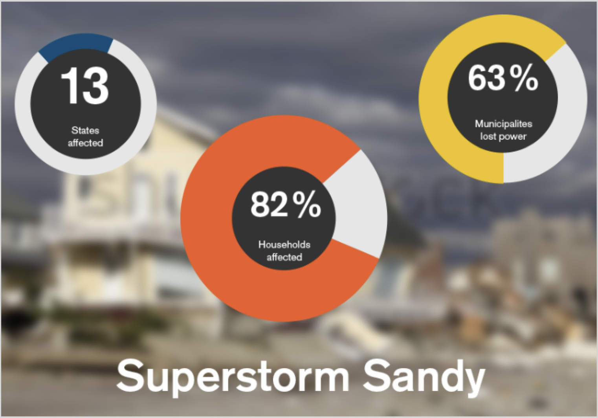
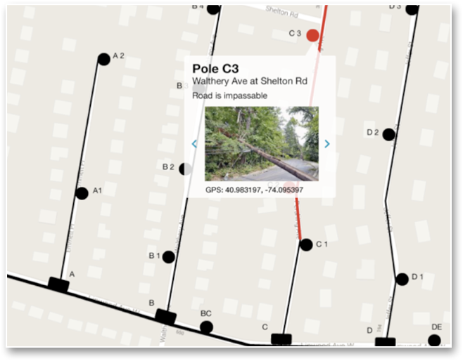

← Back to Case Studies
Currant
Disaster and Emergency Response App & Utilities Platform
After Superstorm Sandy, felled trees pulled down power lines, knocking out power to some homes and blocked street access, but it was too localized for PSE&G to be aware of. We would leverage social media to gather data, funnel and distribute information.
My Roles: Named Company / Created Logo / UX Researcher / UX & UI Designer
Goals
- Our goal was to leverage the power of social media to share user data with the township, its residents, and the utility companies
- Brand the company
- Design and build a mobile app for reporting:
- downed power lines and trees
- where to charge your phone
- where to find shelter & first aid
- status of gas stations and supermarkets
- Create a desktop platform concept for the power company to ID more focused information
Challenges
- The first challenge was to rename their company — Become, the original name — was missing the mark
- The next challenge was keeping the team focused on the core functionality
- Selling the idea to the township
- Getting an audience with PSE&G

The concept for PSE&G shows the additional information the Currant would layer on their maps. User-provided photos with hyper-locale data would inform PSE&G of downed poles.
Strategy
- Come up with a meaningful name
- Create a pitch deck with "screenshots" of the app and the platform
- Design and build an app that is safe and simple to use in times of crisis to report an issue or find a service (shelter, food, first aid, gas, or a place to charge your phone)
- Show PSE&G how we can help them fill in the gaps of localized issues

Outcome
- I came up with the name Currant, which is spelled like the fruit but, when spoken, is a homonym for current, the flow of electricity
- The founder secured a spot in the New Jersey Institute of Technology NJIT's Incubator Program
- Successfully raised funds through Kickstarter
- The app was Tweeted about by Senator Corey Booker

Map it! Tap the pin icon, select the issue(s), take a photo with geo-location enabled and submit.